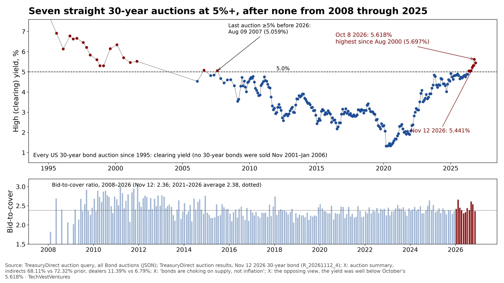

Q9. Bond Auctions

Top: the high (clearing) yield of every US Treasury 30-year bond auction and reopening since 1995; bottom: the bid-to-cover ratio since 2008 (TreasuryDirect auction records). The last 7 auctions, May through November 2026, all cleared at 5% or higher; before this year the last one at or above 5% was August 2007. The October 8 reopening cleared at 5.618%, the highest 30-year auction yield since August 2000. The November 12 new issue ($25 billion) cleared at 5.441% with a 2.36 bid-to-cover; primary dealers — the banks obliged to bid — were left with 11.4% of the offering, about $2.84 billion.
- 30-year auction clearing yields in 2026: Jan 4.83%, Feb 4.75%, Mar 4.87%, Apr 4.88%, May 5.05%, Jun 5.02%, Jul 5.06%, Aug 5.22%, Sep 5.31%, Oct 5.62%, Nov 5.44%.
- Bid-to-cover on Nov 12 was 2.36; X posters cited a 0.4 bp tail versus the when-issued yield and indirect (largely foreign) bidders falling to 68.1% from 72.3%.
- The bearish reading on X is that bonds are 'choking on supply, not inflation' after a cooler PPI still pushed the 10-year to 5.16% on Nov 13. The other side: November's yield was lower than October's and demand was only slightly soft.
- Why it matters for debt cliffs: every refinancing at 5%+ replaces debt issued at 1–3% in 2020–21, raising the interest bill for decades.
Note: Includes reopenings (terms listed as 29-year 9–11 months). Clearing yield is the highest accepted yield. Dealer share is primary dealers' competitive awards divided by the offering amount. The bid-to-cover panel starts in 2008 for readability; the full series in the source runs from 1979.
Sources: TreasuryDirect auction query, all Bond auctions (JSON) TreasuryDirect auction results, Nov 12 2026 30-year bond (R_20261112_4) X: auction summary, indirects 68.11% vs 72.32% prior, dealers 11.39% vs 6.79% X: 'bonds are choking on supply, not inflation' X: the opposing view, the yield was well below October's 5.618%